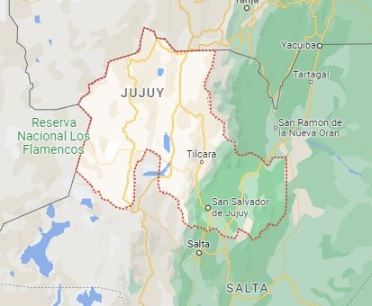
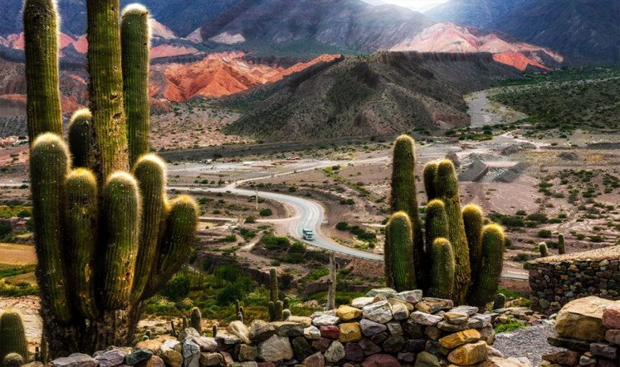
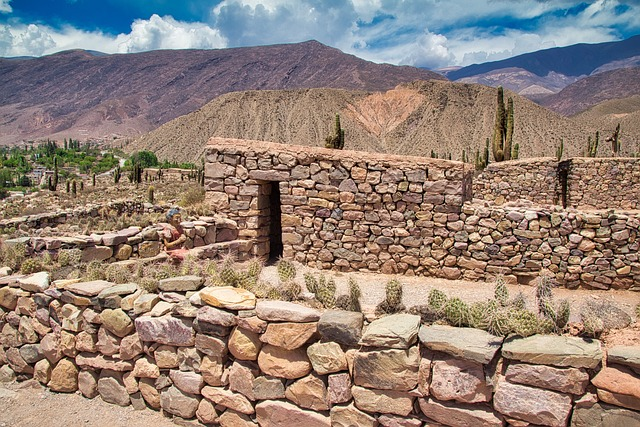
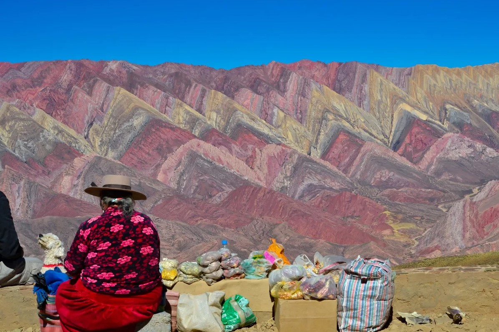
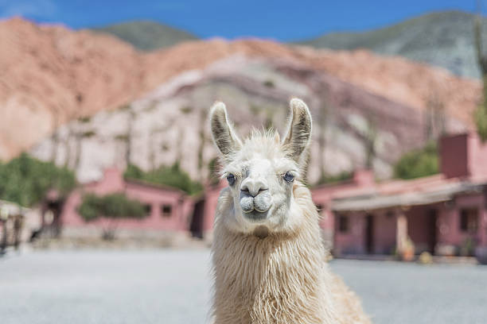

"DONDE LOS COLORES DE LA TIERRA COBRAN VIDA"
Jujuy, una provincia enclavada en el remoto noroeste de Argentina, es un rincón del país que te sorprenderá con su belleza única y sus fascinantes características.
La Quebrada de Humahuaca: El corazón de Jujuy es la Quebrada de Humahuaca, una maravilla geológica declarada Patrimonio de la Humanidad por la UNESCO. Este impresionante valle se caracteriza por sus formaciones rocosas únicas, colinas de colores intensos y una rica historia que abarca siglos. Recorrer la Quebrada de Humahuaca te sumergirá en un paisaje surrealista, donde las montañas parecen esculpidas por la mano de un artista.
Aldeas Quechuas: A lo largo de la Quebrada de Humahuaca, encontrarás pintorescas aldeas quechuas que conservan sus tradiciones ancestrales. Las comunidades indígenas que habitan esta región han mantenido sus costumbres, idioma y artesanías a lo largo de generaciones. Un paseo por estas aldeas te permitirá experimentar la cultura quechua de primera mano y conocer la hospitalidad de su gente.
San Salvador de Jujuy:La capital provincial, San Salvador de Jujuy, es un punto de partida ideal para explorar la región. Esta ciudad combina la modernidad con la tradición, y puedes explorar su arquitectura colonial, visitar sus museos y probar la deliciosa gastronomía local. No olvides probar las empanadas y el locro, dos platos tradicionales que te conquistarán.
Cerro de los Siete Colores:En el pintoresco pueblo de Purmamarca, al sur de la Quebrada de Humahuaca, se encuentra el icónico Cerro de los Siete Colores. Esta montaña es famosa por sus estratos de colores vibrantes que parecen sacados de un lienzo. Es un lugar perfecto para hacer caminatas y disfrutar de vistas panorámicas espectaculares.
Gastronomía y Tradiciones: Jujuy es conocida por su comida regional, que combina influencias indígenas y españolas. Además de las empanadas y el locro, no te pierdas la oportunidad de probar platos como el tamales y las humitas. La música y la danza folclórica son parte integral de la vida en Jujuy, y podrás presenciar festivales y celebraciones tradicionales a lo largo del año.
Naturaleza Deslumbrante: Además de la Quebrada de Humahuaca, Jujuy ofrece una variedad de paisajes naturales, desde selvas tropicales hasta altas montañas. El Parque Nacional Calilegua es un paraíso para los amantes de la naturaleza, con una diversidad de flora y fauna única en la región.
Jujuy es una provincia argentina que te cautivará con su asombrosa geografía, su rica cultura indígena, su comida deliciosa y sus tradiciones arraigadas. Es un destino perfecto para los amantes de la naturaleza, los entusiastas de la historia y aquellos que buscan una experiencia auténtica en Argentina.
¡Ven y descubre la magia de Jujuy!